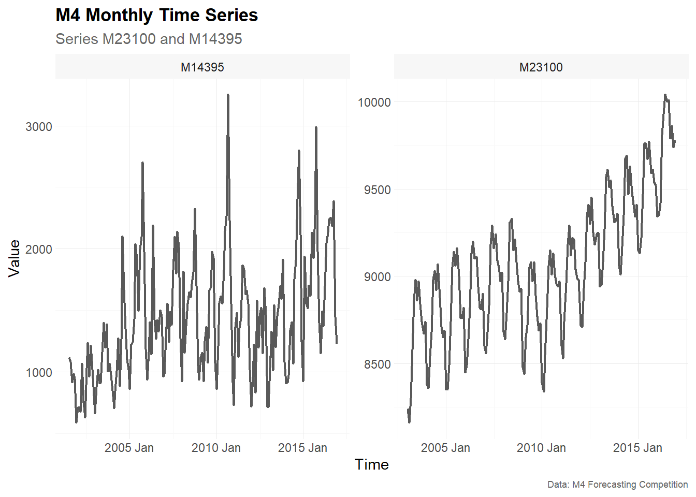
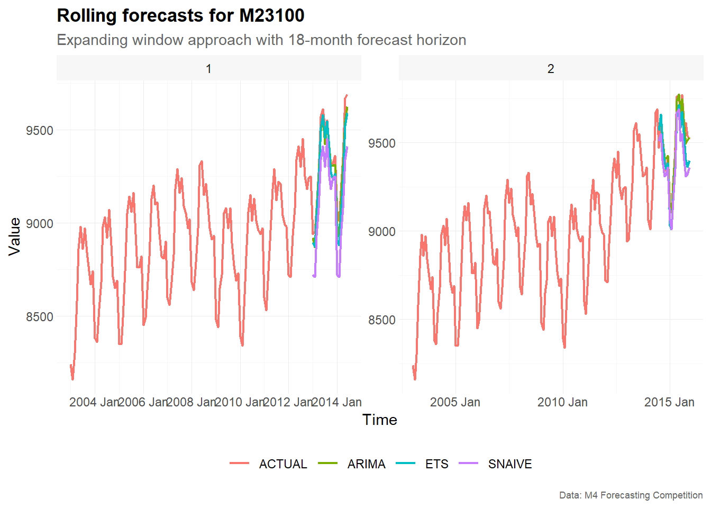
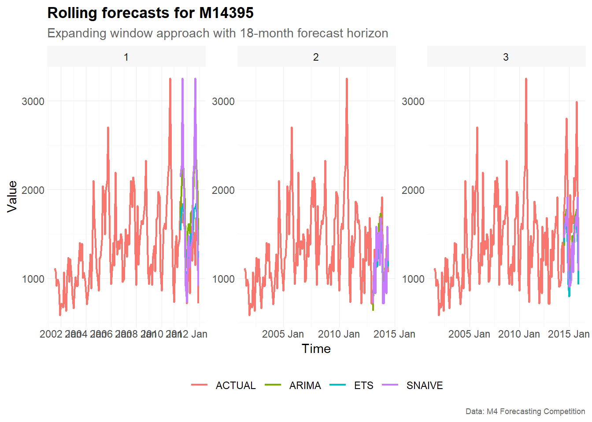

Expanding window approach
Alexander Häußer
Mai 2026
Source:vignettes/vignette_01_monthly_expanding.Rmd
vignette_01_monthly_expanding.RmdThe package tscv provides helper functions for time
series analysis, forecasting and time series cross-validation. It is
mainly designed to work with the tidy forecasting ecosystem, especially
the packages tsibble, fable,
fabletools and feasts.
In this vignette, we demonstrate an expanding window approach for time series cross-validation using monthly time series from the M4 forecasting competition.
Installation
You can install the development version from GitHub with:
# install.packages("devtools")
devtools::install_github("ahaeusser/tscv")Data preparation
The data set M4_monthly_data is a tibble
with selected monthly time series from the M4 forecasting competition.
It contains the following columns:
-
index: monthly time index -
series: time series ID from the M4 forecasting competition -
category: category from the M4 forecasting competition -
value: measurement variable
In this vignette, we use two monthly time series, M23100
and M14395, to demonstrate time series cross-validation
with an expanding window approach and an 18-month-ahead forecast
horizon.
The function plot_line() is used to visualize the time
series. The function summarise_data() explores the
structure of the data, including the start date, end date, number of
observations, number of missing values and number of zero values. The
function summarise_stats() calculates descriptive
statistics for each time series.
series_id = "series"
value_id = "value"
index_id = "index"
context <- list(
series_id = series_id,
value_id = value_id,
index_id = index_id
)
# Prepare data set
main_frame <- M4_monthly_data |>
filter(series %in% c("M23100", "M14395"))
main_frame
#> # A tibble: 354 × 4
#> index series category value
#> <mth> <chr> <chr> <dbl>
#> 1 2001 Jul M14395 Micro 1116.
#> 2 2001 Aug M14395 Micro 1079.
#> 3 2001 Sep M14395 Micro 917.
#> 4 2001 Oct M14395 Micro 982.
#> 5 2001 Nov M14395 Micro 946.
#> 6 2001 Dec M14395 Micro 586.
#> 7 2002 Jan M14395 Micro 710.
#> 8 2002 Feb M14395 Micro 714.
#> 9 2002 Mar M14395 Micro 675
#> 10 2002 Apr M14395 Micro 1068.
#> # ℹ 344 more rows
main_frame |>
plot_line(
x = index,
y = value,
facet_var = series,
title = "M4 Monthly Time Series",
subtitle = "Series M23100 and M14395",
xlab = "Time",
ylab = "Value",
caption = "Data: M4 Forecasting Competition"
)
summarise_data(
.data = main_frame,
context = context
)
#> # A tibble: 2 × 8
#> series start end n_obs n_missing pct_missing n_zeros pct_zeros
#> <chr> <mth> <mth> <int> <int> <dbl> <int> <dbl>
#> 1 M14395 2001 Jul 2016 Dec 186 0 0 0 0
#> 2 M23100 2003 Jan 2016 Dec 168 0 0 0 0
summarise_stats(
.data = main_frame,
context = context
)
#> # A tibble: 2 × 11
#> series mean median mode sd p0 p25 p75 p100 skewness kurtosis
#> <chr> <dbl> <dbl> <dbl> <dbl> <dbl> <dbl> <dbl> <dbl> <dbl> <dbl>
#> 1 M14395 1422. 1369. 1113. 490. 586. 1031. 1697. 3253 0.786 3.62
#> 2 M23100 9059. 9050 9040. 394. 8160 8768. 9310 10040 0.222 2.74Split data into training and testing
To prepare the data for time series cross-validation, we use the
function make_split(). This function partitions the data
into several training and testing slices.
The argument mode controls the type of rolling-origin
resampling:
-
mode = "stretch"creates an expanding window. -
mode = "slide"creates a fixed window.
In an expanding window approach, the training sample grows over time. The first split starts with an initial training window of fixed length. In later splits, additional observations are added to the training sample, while the forecast horizon remains unchanged.
In this vignette, we use:
-
value = 120: the first training window contains 120 monthly observations, corresponding to 10 years of data -
n_ahead = 18: each test set contains 18 observations, corresponding to an 18-month-ahead forecast horizon -
n_skip = 17: after each split, the rolling origin is advanced by 18 months, which creates non-overlapping test windows -
mode = "stretch": the training window expands over time
# Setup for time series cross validation
type = "first"
value = 120 # initial training window (= 10 years of monthly observations)
n_ahead = 18 # testing window (= forecast horizon, 18 months ahead)
n_skip = 17 # skip 17 observations to obtain non-overlapping test windows
n_lag = 0 # no lag
mode = "stretch" # expanding window approach
exceed = FALSE # only pseudo out-of-sample forecast
split_frame <- make_split(
main_frame = main_frame,
context = context,
type = type,
value = value,
n_ahead = n_ahead,
n_skip = n_skip,
n_lag = n_lag,
mode = mode,
exceed = exceed
)
split_frame
#> # A tibble: 5 × 4
#> series split train test
#> <chr> <int> <list> <list>
#> 1 M14395 1 <int [120]> <int [18]>
#> 2 M14395 2 <int [138]> <int [18]>
#> 3 M14395 3 <int [156]> <int [18]>
#> 4 M23100 1 <int [120]> <int [18]>
#> 5 M23100 2 <int [138]> <int [18]>The resulting object split_frame contains one row per
time series and split. The columns train and
test are list-columns containing the row positions used for
the training and test samples.
The output above shows that the first split uses 120 observations for
training and 18 observations for testing. In the second split, the
training window has expanded to 138 observations, while the test window
remains fixed at 18 observations. The third split for series
M14395 uses 156 observations for training.
The number of splits can differ across time series because the
selected M4 series do not necessarily have the same number of
observations. In the example above, M14395 allows three
valid 18-month test windows, while M23100 allows two.
Training and forecasting
The training and test samples are defined in
split_frame. We now use slice_train() and
slice_test() to extract the corresponding observations from
main_frame.
Since the forecasting models are estimated with functions from
fable and fabletools, the training data is
converted from a tibble to a tsibble.
For the monthly M4 data, we estimate three forecasting models:
-
SNAIVE: seasonal naive model with yearly seasonality -
ETS: exponential smoothing state space model -
ARIMA: automatic ARIMA model
These models are estimated separately for each time series and each split.
# Slice training data from main_frame according to split_frame
train_frame <- slice_train(
main_frame = main_frame,
split_frame = split_frame,
context = context
)
train_frame
#> # A tibble: 672 × 5
#> index series category value split
#> <mth> <chr> <chr> <dbl> <int>
#> 1 2001 Jul M14395 Micro 1116. 1
#> 2 2001 Aug M14395 Micro 1079. 1
#> 3 2001 Sep M14395 Micro 917. 1
#> 4 2001 Oct M14395 Micro 982. 1
#> 5 2001 Nov M14395 Micro 946. 1
#> 6 2001 Dec M14395 Micro 586. 1
#> 7 2002 Jan M14395 Micro 710. 1
#> 8 2002 Feb M14395 Micro 714. 1
#> 9 2002 Mar M14395 Micro 675 1
#> 10 2002 Apr M14395 Micro 1068. 1
#> # ℹ 662 more rows
# Slice test data from main_frame according to split_frame
test_frame <- slice_test(
main_frame = main_frame,
split_frame = split_frame,
context = context
)
test_frame
#> # A tibble: 90 × 5
#> index series category value split
#> <mth> <chr> <chr> <dbl> <int>
#> 1 2011 Jul M14395 Micro 1866. 1
#> 2 2011 Aug M14395 Micro 1833. 1
#> 3 2011 Sep M14395 Micro 1630. 1
#> 4 2011 Oct M14395 Micro 1659. 1
#> 5 2011 Nov M14395 Micro 1554. 1
#> 6 2011 Dec M14395 Micro 1018. 1
#> 7 2012 Jan M14395 Micro 717. 1
#> 8 2012 Feb M14395 Micro 958. 1
#> 9 2012 Mar M14395 Micro 1221. 1
#> 10 2012 Apr M14395 Micro 832. 1
#> # ℹ 80 more rows
# Convert tibble to tsibble
train_frame <- train_frame |>
as_tsibble(
index = index,
key = c(series, split)
)
train_frame
#> # A tsibble: 672 x 5 [1M]
#> # Key: series, split [5]
#> index series category value split
#> <mth> <chr> <chr> <dbl> <int>
#> 1 2001 Jul M14395 Micro 1116. 1
#> 2 2001 Aug M14395 Micro 1079. 1
#> 3 2001 Sep M14395 Micro 917. 1
#> 4 2001 Oct M14395 Micro 982. 1
#> 5 2001 Nov M14395 Micro 946. 1
#> 6 2001 Dec M14395 Micro 586. 1
#> 7 2002 Jan M14395 Micro 710. 1
#> 8 2002 Feb M14395 Micro 714. 1
#> 9 2002 Mar M14395 Micro 675 1
#> 10 2002 Apr M14395 Micro 1068. 1
#> # ℹ 662 more rows
# Model training via fabletools::model()
model_frame <- train_frame |>
model(
"SNAIVE" = SNAIVE(value ~ lag("year")),
"ETS" = ETS(value),
"ARIMA" = ARIMA(value)
)
model_frame
#> # A mable: 5 x 5
#> # Key: series, split [5]
#> series split SNAIVE ETS ARIMA
#> <chr> <int> <model> <model> <model>
#> 1 M14395 1 <SNAIVE> <ETS(M,N,M)> <ARIMA(1,0,0)(0,1,1)[12] w/ drift>
#> 2 M14395 2 <SNAIVE> <ETS(M,N,M)> <ARIMA(1,0,1)(2,1,1)[12]>
#> 3 M14395 3 <SNAIVE> <ETS(M,N,M)> <ARIMA(0,0,2)(0,1,1)[12]>
#> 4 M23100 1 <SNAIVE> <ETS(M,Ad,A)> <ARIMA(1,0,0)(2,1,0)[12] w/ drift>
#> 5 M23100 2 <SNAIVE> <ETS(A,Ad,A)> <ARIMA(1,0,1)(2,1,0)[12] w/ drift>
# Forecasting via fabletools::forecast()
fable_frame <- model_frame |>
forecast(h = n_ahead)
fable_frame
#> # A fable: 270 x 6 [1M]
#> # Key: series, split, .model [15]
#> series split .model index
#> <chr> <int> <chr> <mth>
#> 1 M14395 1 SNAIVE 2011 Jul
#> 2 M14395 1 SNAIVE 2011 Aug
#> 3 M14395 1 SNAIVE 2011 Sep
#> 4 M14395 1 SNAIVE 2011 Oct
#> 5 M14395 1 SNAIVE 2011 Nov
#> 6 M14395 1 SNAIVE 2011 Dec
#> 7 M14395 1 SNAIVE 2012 Jan
#> 8 M14395 1 SNAIVE 2012 Feb
#> 9 M14395 1 SNAIVE 2012 Mar
#> 10 M14395 1 SNAIVE 2012 Apr
#> # ℹ 260 more rows
#> # ℹ 2 more variables: value <dist>, .mean <dbl>
# Convert fable_frame (fable) to future_frame (tibble)
future_frame <- make_future(
fable = fable_frame,
context = context
)
future_frame
#> # A tibble: 270 × 6
#> index series model split horizon point
#> <mth> <chr> <chr> <int> <int> <dbl>
#> 1 2011 Jul M14395 SNAIVE 1 1 2145.
#> 2 2011 Aug M14395 SNAIVE 1 2 2264.
#> 3 2011 Sep M14395 SNAIVE 1 3 3253
#> 4 2011 Oct M14395 SNAIVE 1 4 2232.
#> 5 2011 Nov M14395 SNAIVE 1 5 1556.
#> 6 2011 Dec M14395 SNAIVE 1 6 915.
#> 7 2012 Jan M14395 SNAIVE 1 7 732.
#> 8 2012 Feb M14395 SNAIVE 1 8 1367
#> 9 2012 Mar M14395 SNAIVE 1 9 1478.
#> 10 2012 Apr M14395 SNAIVE 1 10 1122.
#> # ℹ 260 more rowsThe object model_frame is a mable, that is,
a model table. Each row corresponds to one combination of
series and split, while each model is stored
in a separate column.
The model specification may change across splits because the models
are re-estimated for each training sample. This is especially visible
for the automatic ETS() and ARIMA() models.
For example, the selected ARIMA specification for M14395
differs between split 1, split 2 and split 3. This is expected, since
each split uses a different training sample. The seasonal period
[12] in the ARIMA output indicates yearly seasonality in
monthly data.
Visualize rolling forecasts
To visualize the rolling forecasts, we combine the observed values and the forecasts into one data set.
The training and test observations are labelled as
ACTUAL, while the forecasts keep their model names. The
observed values are assigned horizon = 0, whereas the
forecast values have horizons from 1 to 18.
# Combine actual values from train and test data
actual_frame <- bind_rows(
train_frame,
test_frame
)
# Combine actual values and forecasts
plot_frame <- bind_rows(
actual_frame |>
as_tibble() |>
transmute(
index,
series,
model = "ACTUAL",
split,
horizon = 0L,
point = value
),
future_frame
)
plot_frame
#> # A tibble: 1,032 × 6
#> index series model split horizon point
#> <mth> <chr> <chr> <int> <int> <dbl>
#> 1 2001 Jul M14395 ACTUAL 1 0 1116.
#> 2 2001 Aug M14395 ACTUAL 1 0 1079.
#> 3 2001 Sep M14395 ACTUAL 1 0 917.
#> 4 2001 Oct M14395 ACTUAL 1 0 982.
#> 5 2001 Nov M14395 ACTUAL 1 0 946.
#> 6 2001 Dec M14395 ACTUAL 1 0 586.
#> 7 2002 Jan M14395 ACTUAL 1 0 710.
#> 8 2002 Feb M14395 ACTUAL 1 0 714.
#> 9 2002 Mar M14395 ACTUAL 1 0 675
#> 10 2002 Apr M14395 ACTUAL 1 0 1068.
#> # ℹ 1,022 more rowsThe object plot_frame is useful for plotting actual
observations and forecasts together. Since the data contains several
rolling-origin splits, we facet the plots by split.
plot_frame |>
filter(series == "M23100") |>
plot_line(
x = index,
y = point,
color = model,
facet_var = split,
title = "Rolling forecasts for M23100",
subtitle = "Expanding window approach with 18-month forecast horizon",
xlab = "Time",
ylab = "Value",
caption = "Data: M4 Forecasting Competition"
)
plot_frame |>
filter(series == "M14395") |>
plot_line(
x = index,
y = point,
color = model,
facet_var = split,
title = "Rolling forecasts for M14395",
subtitle = "Expanding window approach with 18-month forecast horizon",
xlab = "Time",
ylab = "Value",
caption = "Data: M4 Forecasting Competition"
)
The plots show how the forecasts evolve across different rolling-origin splits. In each facet, the training window ends at a different point in time. The models are then estimated using only the available training data for that split and produce forecasts for the following 18 months.
Because we use an expanding window approach, later splits are based on larger training samples. This can lead to changes in the estimated model structure and in the resulting forecasts.
Forecast accuracy
The rolling forecasts can be evaluated against the test observations
using make_accuracy(). Accuracy can be summarized either by
forecast horizon or by split.
In this vignette, we focus on the symmetric mean absolute percentage
error (sMAPE). The sMAPE is scale-independent
and is therefore useful for comparing forecast accuracy across different
time series.
Forecast accuracy by forecast horizon
Accuracy by forecast horizon shows how forecast errors change as the forecast horizon increases from 1 to 18 months ahead.
accuracy_horizon <- make_accuracy(
future_frame = future_frame,
main_frame = main_frame,
context = context,
dimension = "horizon"
)
accuracy_horizon |>
filter(metric == "sMAPE")
#> # A tibble: 108 × 6
#> series model dimension n metric value
#> <chr> <chr> <chr> <int> <chr> <dbl>
#> 1 M14395 ARIMA horizon 1 sMAPE 15.7
#> 2 M14395 ARIMA horizon 2 sMAPE 11.2
#> 3 M14395 ARIMA horizon 3 sMAPE 28.8
#> 4 M14395 ARIMA horizon 4 sMAPE 26.2
#> 5 M14395 ARIMA horizon 5 sMAPE 18.9
#> 6 M14395 ARIMA horizon 6 sMAPE 17.1
#> 7 M14395 ARIMA horizon 7 sMAPE 19.7
#> 8 M14395 ARIMA horizon 8 sMAPE 35.8
#> 9 M14395 ARIMA horizon 9 sMAPE 19.2
#> 10 M14395 ARIMA horizon 10 sMAPE 30.9
#> # ℹ 98 more rowsForecast accuracy by split
Accuracy by split shows how forecast errors vary across rolling-origin splits.
accuracy_split <- make_accuracy(
future_frame = future_frame,
main_frame = main_frame,
context = context,
dimension = "split"
)
accuracy_split |>
filter(metric == "sMAPE")
#> # A tibble: 15 × 6
#> series model dimension n metric value
#> <chr> <chr> <chr> <int> <chr> <dbl>
#> 1 M14395 ARIMA split 1 sMAPE 33.8
#> 2 M14395 ARIMA split 2 sMAPE 12.8
#> 3 M14395 ARIMA split 3 sMAPE 27.9
#> 4 M14395 ETS split 1 sMAPE 15.8
#> 5 M14395 ETS split 2 sMAPE 13.9
#> 6 M14395 ETS split 3 sMAPE 34.6
#> 7 M14395 SNAIVE split 1 sMAPE 27.3
#> 8 M14395 SNAIVE split 2 sMAPE 15.2
#> 9 M14395 SNAIVE split 3 sMAPE 29.0
#> 10 M23100 ARIMA split 1 sMAPE 0.501
#> 11 M23100 ARIMA split 2 sMAPE 0.348
#> 12 M23100 ETS split 1 sMAPE 0.816
#> 13 M23100 ETS split 2 sMAPE 0.890
#> 14 M23100 SNAIVE split 1 sMAPE 2.28
#> 15 M23100 SNAIVE split 2 sMAPE 1.27The two accuracy views answer different questions. Accuracy by horizon is useful for understanding whether forecast performance changes with the forecast horizon. Accuracy by split is useful for identifying whether some forecast origins are more difficult than others.
Summary
This vignette demonstrated how to use tscv for time
series cross-validation with an expanding window approach. The workflow
consists of five main steps:
- Prepare the data and define the column context.
- Create rolling-origin splits using
make_split(). - Extract training and test samples using
slice_train()andslice_test(). - Estimate forecasting models and create forecasts.
- Visualize and evaluate the rolling forecasts.
The expanding window approach is useful when the training sample should grow over time, which is often the case in real-world forecasting applications where all available historical information is used for model estimation.